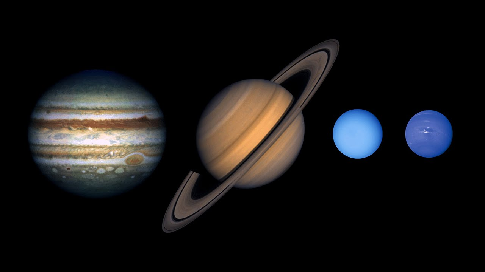
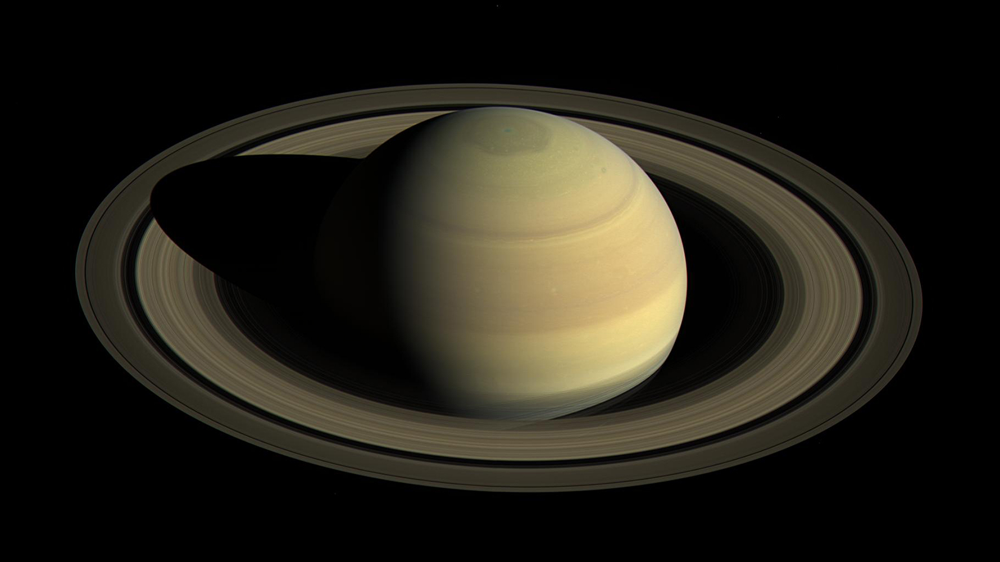
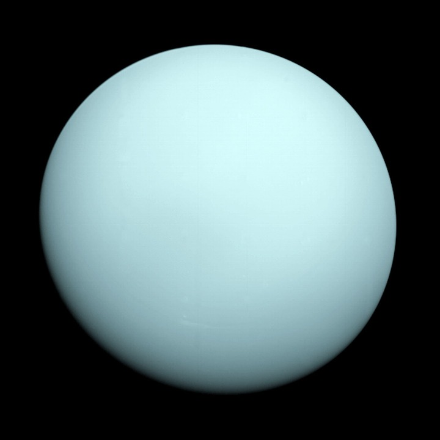
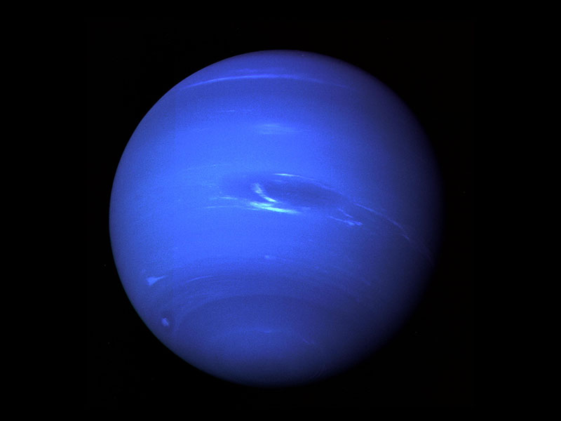

The Outer Planets
The outer planets are all a type of planet known as a gas giant, due to their composition largely being different gases that give them their vibrant colours. The four outer planets are Jupiter, Saturn, Uranus, and Neptune. The distance of these planets from the Sun means they all have quite cold temperatures. The sheer mass of some of these planets lead them to have many moons and sometimes rings. Every outer planet is different and they are all unique in their own way.

Jupiter
Jupiter is the largest of all the outer planets and has the strongest gravitational pull of all the planets in the solar system. Because of Jupiter's strong gravitational pull, it affects many things in the solar system. Jupiter tends to throw asteroids and comets off course or even fling them in different directions. As well as move around celestial objects, Jupiter has a confirmed 79 moons of it's own. Jupiter is also home to small, dark rings. Jupiter is made up of around 90% hydrogen, 10% helium, and a very small amount of other compounds such as ammonia. Jupiter's mass is it's most notable feaute, being more than twice that of all the other planets combined.
Saturn
Saturn is the sixth planet from the Sun and is known for it's beautiful rings. Satun is home to 82 moons, however the real attraction orbiting Saturn is it's massive rings. Saturn's rings are the most visible rings in our solar system, consisting of mostly ice and some rock. Eventually Saturn's rings will "rain" back down to Saturn due to degrading orbit and other factors. However, for the time being Saturn remains a beautiful planet resting beyond the asteroid belt.

Uranus
Uranus is the seventh planet from the Sun and is best known for it's odd axis tilt of 98°. Uranus' tilt means the planet appears on it's side, as it's thin rings and atmospheric storms spin almost vertically. Uranus is a bright blue due to it's upper atmospheric composition of mostly methane and ammonia. Uranus' atmosphere is also the coldest in the solar system, reaching temperatures as low as -224°C.

Neptune
Neptune is the farthest planet from the Sun and is not visible with the naked eye from Earth. Neptune's orbit is elliptical, meaning it follows a closer to oval shape than circle. Because of this orbit, Neptune extends past Pluto. This means Neptune used to be the 8th and 9th planet simultaneously, before Pluto was deemed a dwarf planet. Like Uranus, Neptune also contains methane in it's upper atmosphere which gives it it's deep blue colour.
